Managing product pricing on Samsung.com is labor-intensive: huge data sets and variables like time periods, discount rates and customer segments. With two designers, a solution expert and three engineers, I found the key problems in the current tool and designed a new UI to solve them.
Samsung.com is an integrated B2C, B2B and B2E commerce platform — USD 29.9B in revenue and 20–50% year-over-year growth in 2025.
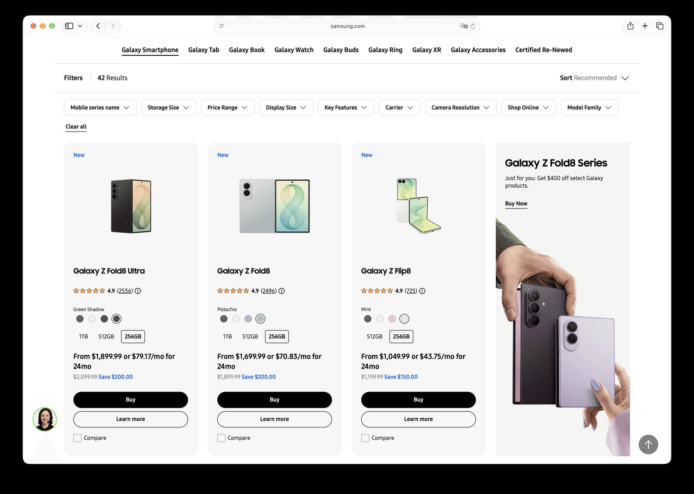
The goal was to fix operational inefficiencies, high costs and performance bottlenecks in product data management — improving UX and system performance, validating the move back to SAP Commerce Cloud, and preparing a global rollout across 24 subsidiaries.
Interviews and demos of the current tool showed a UI that did not match business workflows, system limits that forced manual workarounds — and some parts of the previous tool that were genuinely useful.
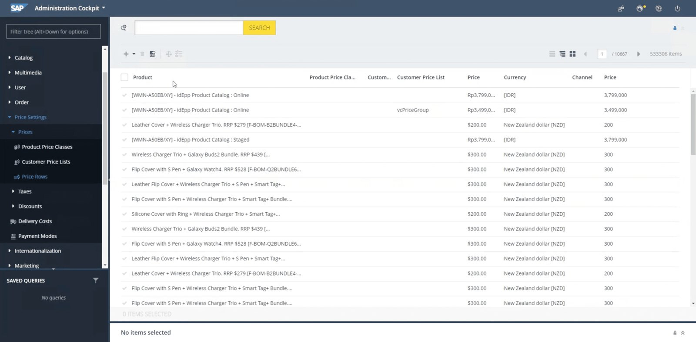
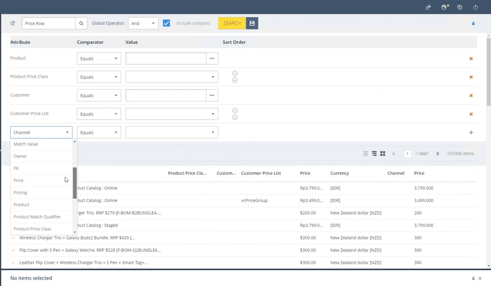
Users work in a simple loop — find, view, edit — starting from the product. The system offered multiple entry points, showed only a few attributes, and allowed one edit at a time on a separate page.
Ideas did not start from scratch: I built on the previous system, keeping what users valued and iterating toward one product-centric screen.
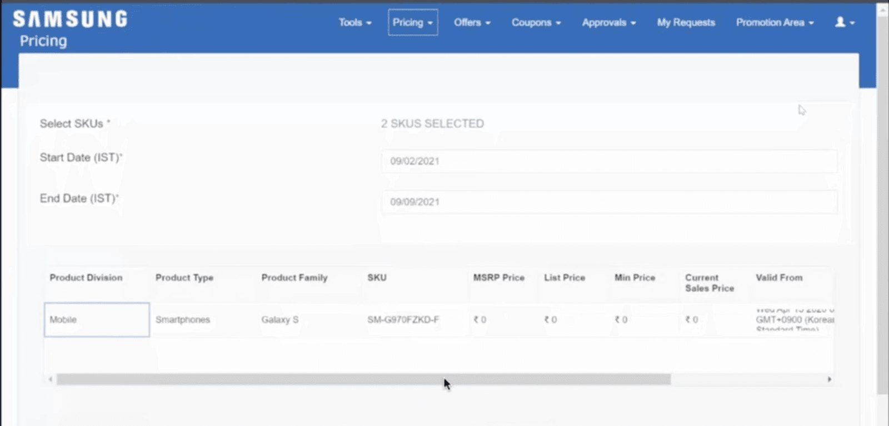
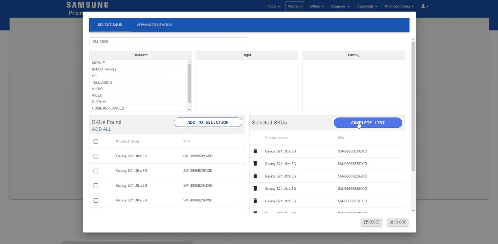
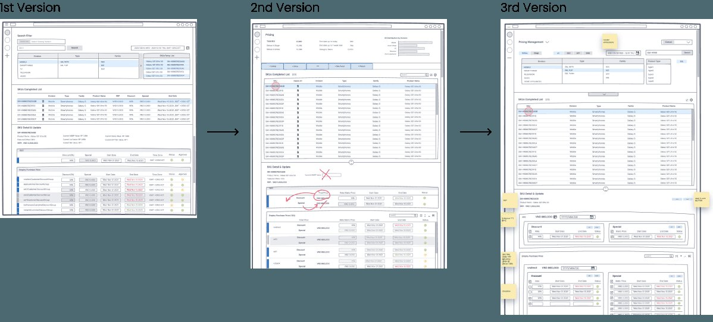
A combined filter of attributes, category and text prompt makes search much faster — no jumping between screens, pop-ups or scrolling.
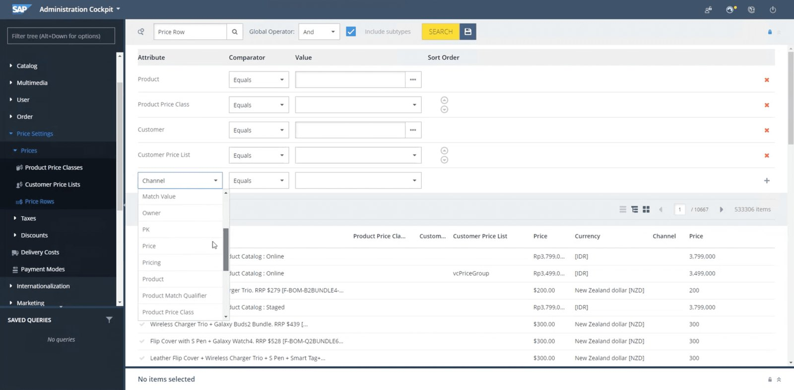
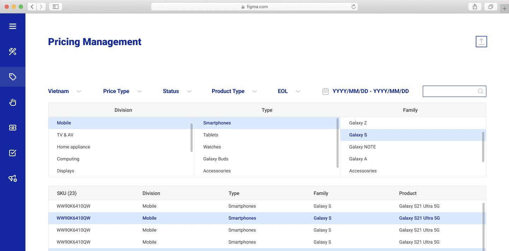
Frequently used controls sit next to editable fields to cut mouse travel, and users can select and update multiple items at once — without leaving the screen.
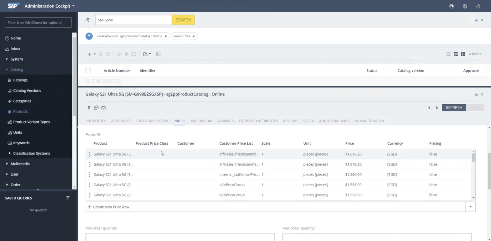
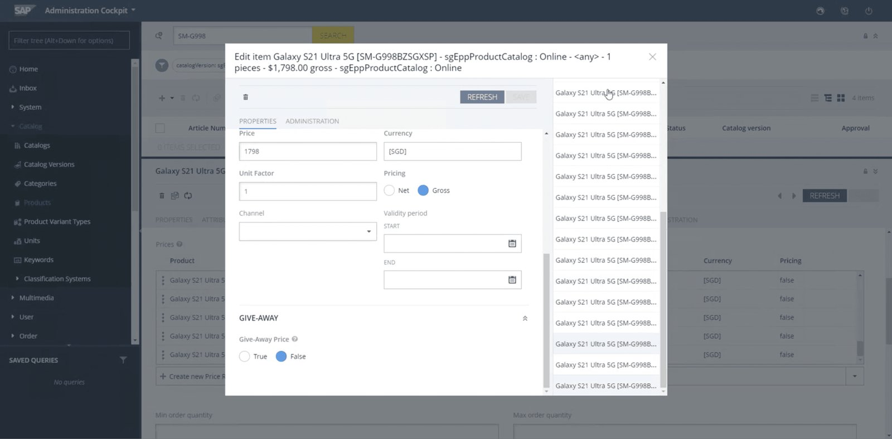
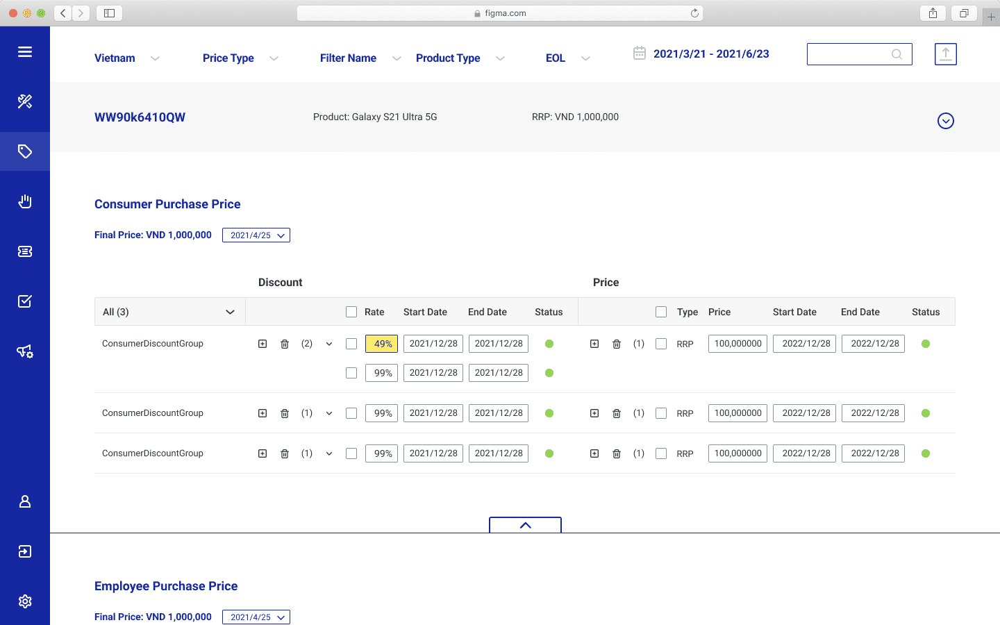
The layout accommodates unbounded product growth without breaking, so users can manage pricing at scale.
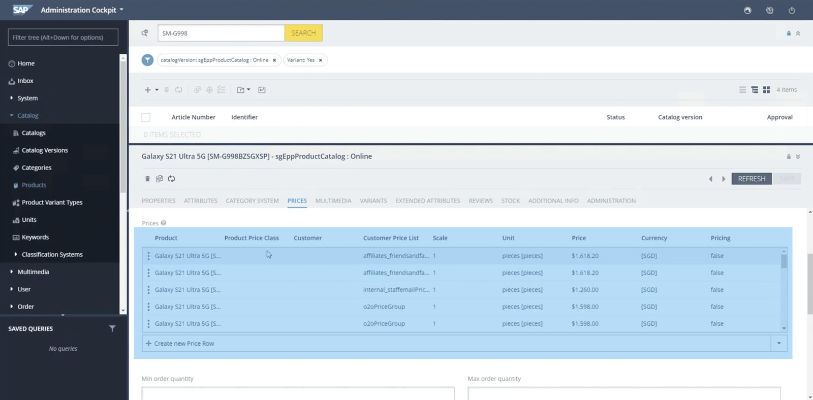
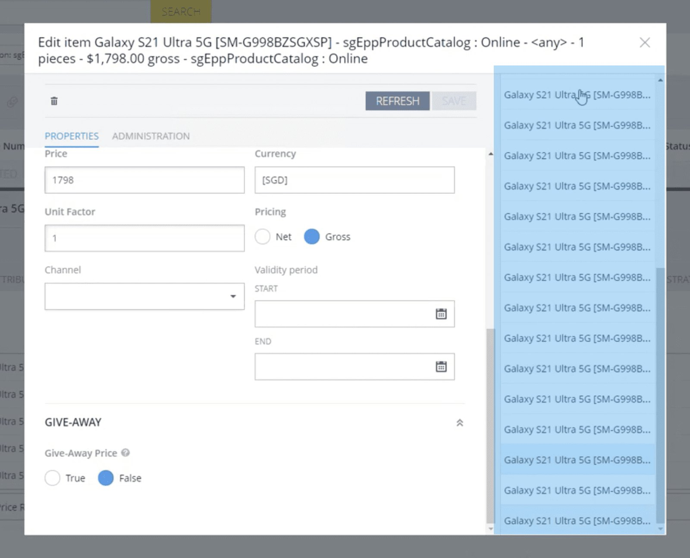
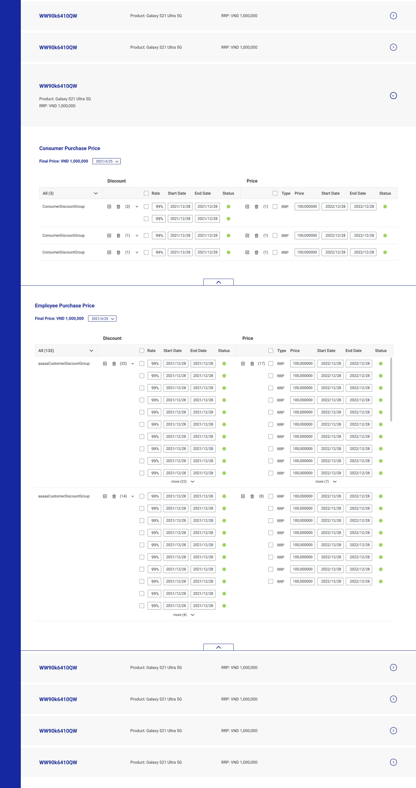
E-commerce data is complex — thousands to millions of products, with attributes that vary by location and timing.
Repetitive edits like price and discount updates pushed me to explore AI for productivity. The next question is how to connect this system with the CMS so it can identify needed edits on its own, leaving people to review the outcomes.
An agent analyzed research recordings and summarized key findings — timestamps, speakers, insights, quotes, what each screen shows and what is missing — then clustered linked insights by importance.
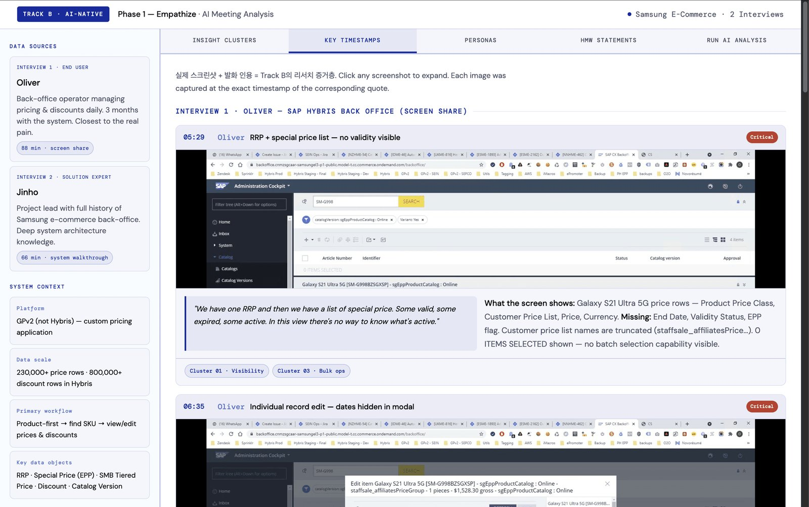